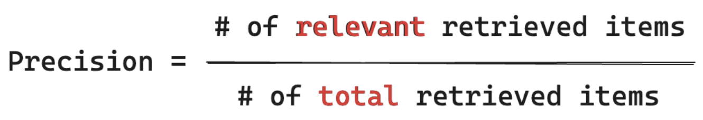
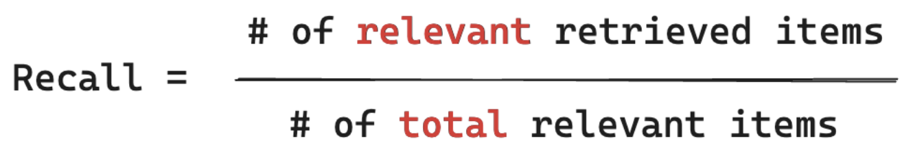
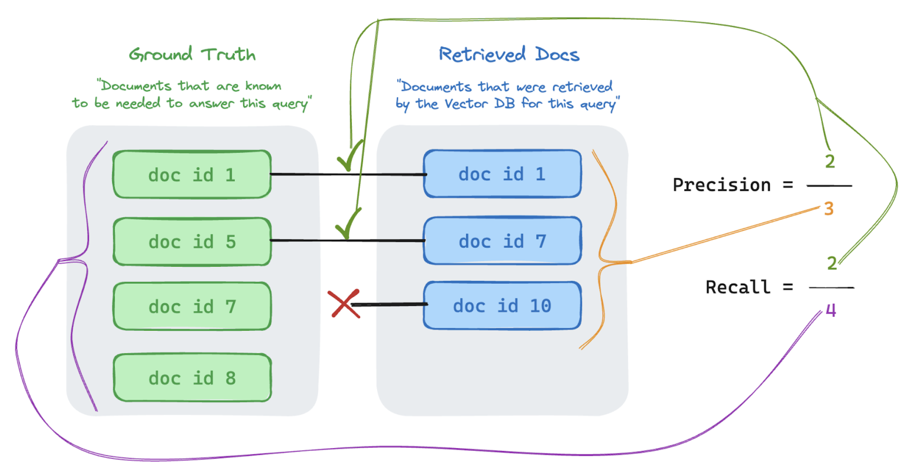

4.2. Assessing performance: Metrics that Matter#
With an evaluation set, you are able to measure the performance of your RAG application across a number of different dimensions, including:
Retrieval quality: Retrieval metrics assess how successfully your RAG application retrieves relevant supporting data. Precision and recall are two key retrieval metrics.
Response quality: Response quality metrics assess how well the RAG application responds to a user’s request. Response metrics can measure, for instance, if the resulting answer is accurate per the ground-truth, how well-grounded the response was given the retrieved context (e.g., did the LLM hallucinate), or how safe the response was (e.g., no toxicity).
System performance (cost & latency): Metrics capture the overall cost and performance of RAG applications. Overall latency and token consumption are examples of chain performance metrics.
It is very important to collect both response and retrieval metrics. A RAG application can respond poorly in spite of retrieving the correct context; it can also provide good responses on the basis of faulty retrievals. Only by measuring both components can we accurately diagnose and address issues in the application.
There are two key approaches to measuring performance across these metrics:
Deterministic measurement: Cost and latency metrics can be computed deterministically based on the application’s outputs. If your evaluation set includes a list of documents that contain the answer to a question, a subset of the retrieval metrics can also be computed deterministically.
LLM judge based measurement In this approach, a separate LLM acts as a judge to evaluate the quality of the RAG application’s retrieval and responses. Some LLM judges, such as answer correctness, compare the human-labeled ground truth vs. the app’s outputs. Other LLM judges, such as groundedness, do not require human-labeled ground truth to assess their app’s outputs.
Important
For an LLM judge to be effective, it must be tuned to understand the use case. Doing so requires careful attention to understand where the judge does and does not work well, and then tuning the judge to improve it for the failure cases.
Mosaic AI Quality Lab provides an out-of-the-box implementation, using hosted LLM judge models, for each metric discussed on this page. Quality Lab’s documentation discusses the details of how these metrics and judges are implemented and provides capabilities to tune the judge’s with your data to increase their accuracy
4.2.1. Metric overview#
Below is a summary of the metrics that Databricks recommends for measuring the quality, cost, and latency of your RAG application. These metrics are implemented in Mosaic AI Quality Lab.
| Dimension | Metric name | Question | Measured by | Ground truth required? |
|---|---|---|---|---|
| Retrieval | chunk_relevance/precision |
What % of the retrieved chunks are relevant to the request? | LLM judge | ✖️ |
| Retrieval | document_recall |
What % of the ground truth documents are represented in the retrieved chunks? | Deterministic | ✔️ |
| Response | correctness |
Overall, did the agent generate a correct response? | LLM judge | ✔️ |
| Response | relevance_to_query |
Is the response relevant to the request? | LLM judge | ✖️ |
| Response | groundedness |
Is the response a hallucination or grounded in context? | LLM judge | ✖️ |
| Response | safety |
Is there harmful content in the response? | LLM judge | ✖️ |
| Cost | total_token_count, total_input_token_count, total_output_token_count |
What's the total count of tokens for LLM generations? | Deterministic | ✖️ |
| Latency | latency_seconds |
What's the latency of executing the app? | Deterministic | ✖️ |
4.2.1.1. Understanding how retrieval metrics work#
Retrieval metrics help you understand if your retriever is delivering relevant results. Retrieval metrics are based on precision and recall.
Metric Name |
Question Answered |
Details |
|---|---|---|
Precision |
What % of the retrieved chunks are relevant to the request? |
Precision is the proportion of retrieved documents that are actually relevant to the user’s request. An LLM judge can be used to assess the relevance of each retrieved chunk to the user’s request. |
Recall |
What % of the ground truth documents are represented in the retrieved chunks? |
Recall is the proportion of the ground truth documents that are represented in the retrieved chunks. This is a measure of the completeness of the results. |
Below is a quick primer on Precision & Recall adapted from the excellent Wikipedia article.
Precision measures “Of the chunks I retrieved, what % of these items are actually relevant to my user’s query?” Computing precision does NOT require knowing ALL relevant items.
{kind=link}
Recall measures “Of ALL the document that I know are relevant to my user’s query, what % did I retrieve a chunk from?” Computing recall requires your ground-truth to contain ALL relevant items.
{kind=link}
* Items can either be a document or a chunk of a document.
In the example below, two out of the three retrieved results were relevant to the user’s query, so the precision was 0.66 (2/3). The retrieved docs included two out of a total of four relevant docs, so the recall was 0.5 (2/4).
